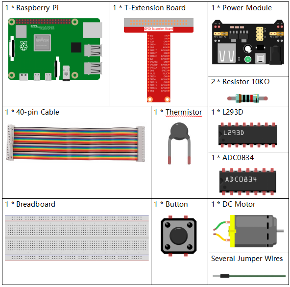
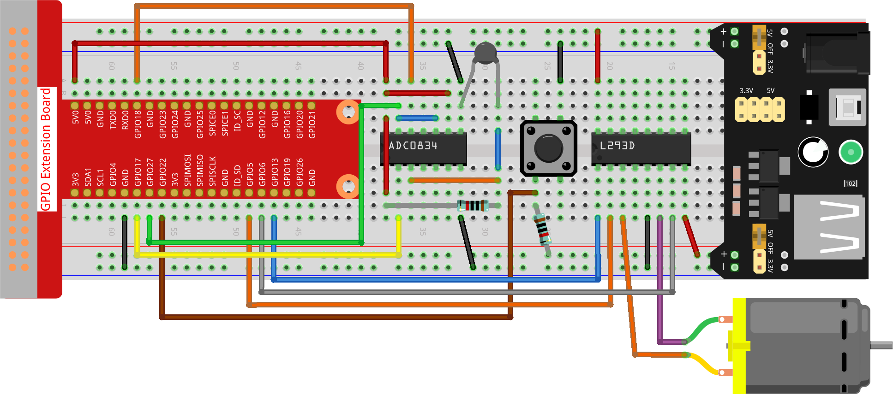

Nota
Ciao, benvenuto nella comunità Facebook degli appassionati di SunFounder Raspberry Pi, Arduino e ESP32! Approfondisci l’uso di Raspberry Pi, Arduino e ESP32 con altri appassionati.
Perché unirsi?
Supporto Esperto: Risolvi problemi post-vendita e sfide tecniche con l’aiuto della nostra comunità e del nostro team.
Impara e Condividi: Scambia consigli e tutorial per migliorare le tue competenze.
Anteprime Esclusive: Ottieni accesso anticipato agli annunci di nuovi prodotti.
Sconti Esclusivi: Approfitta di sconti speciali sui nostri prodotti più recenti.
Promozioni e Omaggi Festivi: Partecipa a promozioni festive e a giveaway.
👉 Pronto a esplorare e creare con noi? Clicca su [Qui] e unisciti oggi stesso!
3.1.4 Ventilatore Intelligente
Introduzione
In questo progetto, utilizzeremo motori, pulsanti e termistori per creare un ventilatore intelligente manuale + automatico, con velocità regolabile.
Componenti Necessari
In questo progetto, avremo bisogno dei seguenti componenti.
{kind=link}
Diagramma Schematico
T-Board Name |
physical |
wiringPi |
BCM |
GPIO17 |
Pin 11 |
0 |
17 |
GPIO18 |
Pin 12 |
1 |
18 |
GPIO27 |
Pin 13 |
2 |
27 |
GPIO22 |
Pin 15 |
3 |
22 |
GPIO5 |
Pin 29 |
21 |
5 |
GPIO6 |
Pin 31 |
22 |
6 |
GPIO13 |
Pin 33 |
23 |
13 |

Procedure Sperimentali
Passo 1: Assembla il circuito.
Nota
Il modulo di alimentazione può utilizzare una batteria da 9V con il connettore a clip incluso nel kit. Inserisci il ponticello del modulo di alimentazione nelle strisce bus a 5V della breadboard.

Passo 2: Accedi alla cartella del codice.
cd ~/davinci-kit-for-raspberry-pi/python-pi5
Passo 3: Esegui il codice.
sudo python3 3.1.4_SmartFan.py
Quando il codice viene eseguito, avvia il ventilatore premendo il pulsante. Ogni volta che premi, la velocità aumenta o diminuisce di un livello. Ci sono 5 livelli di velocità: 0~4. Quando è impostato al 4º livello di velocità e premi il pulsante, il ventilatore si ferma con una velocità di 0.
Se la temperatura aumenta o diminuisce di oltre 2°C, la velocità aumenta o diminuisce automaticamente di 1 livello.
Codice
Nota
Puoi Modificare/Reimpostare/Copiare/Eseguire/Arrestare il codice qui sotto. Tuttavia, prima di farlo, devi accedere al percorso sorgente come davinci-kit-for-raspberry-pi/python-pi5. Dopo aver modificato il codice, puoi eseguirlo direttamente per vedere l’effetto.
#!/usr/bin/env python3
from gpiozero import Motor, Button
from time import sleep
import ADC0834
import math
# Inizializza i pin GPIO per il pulsante e il controllo del motore
BtnPin = Button(22)
motor = Motor(forward=5, backward=6, enable=13)
# Configura il modulo ADC0834 per il sensore di temperatura
ADC0834.setup()
# Inizializza le variabili per tracciare il livello di velocità del motore e le temperature
level = 0
currentTemp = 0
markTemp = 0
def temperature():
"""
Reads and calculates the current temperature from the sensor.
Returns:
float: The current temperature in Celsius.
"""
# Legge il valore analogico dal modulo ADC0834
analogVal = ADC0834.getResult()
# Converte il valore analogico in tensione e poi in resistenza
Vr = 5 * float(analogVal) / 255
Rt = 10000 * Vr / (5 - Vr)
# Calcola la temperatura in gradi Celsius
temp = 1 / (((math.log(Rt / 10000)) / 3950) + (1 / (273.15 + 25)))
Cel = temp - 273.15
return Cel
def motor_run(level):
"""
Adjusts the motor speed based on the specified level.
Args:
level (int): Desired motor speed level.
Returns:
int: Adjusted motor speed level.
"""
# Ferma il motore se il livello è 0
if level == 0:
motor.stop()
return 0
# Imposta il limite massimo di velocità a 4
if level >= 4:
level = 4
# Imposta la velocità del motore
motor.forward(speed=float(level / 4))
return level
def changeLevel():
"""
Changes the motor speed level when the button is pressed and updates the reference temperature.
"""
global level, currentTemp, markTemp
print("Button pressed")
# Cicla tra i livelli 0-4
level = (level + 1) % 5
# Aggiorna la temperatura di riferimento
markTemp = currentTemp
# Associa l'evento di pressione del pulsante alla funzione changeLevel
BtnPin.when_pressed = changeLevel
def main():
"""
Main function to continuously monitor and respond to temperature changes.
"""
global level, currentTemp, markTemp
# Imposta la temperatura di riferimento iniziale
markTemp = temperature()
while True:
# Legge continuamente la temperatura corrente
currentTemp = temperature()
# Regola il livello del motore in base alla differenza di temperatura
if level != 0:
if currentTemp - markTemp <= -2:
level -= 1
markTemp = currentTemp
elif currentTemp - markTemp >= 2:
if level < 4:
level += 1
markTemp = currentTemp
# Esegui il motore al livello regolato
level = motor_run(level)
# Esegue la funzione principale e gestisce KeyboardInterrupt
try:
main()
except KeyboardInterrupt:
# Ferma il motore quando lo script viene interrotto
motor.stop()
Spiegazione del Codice
Importa le classi per gestire un motore e un pulsante, e la funzione sleep per introdurre delle pause. Inoltre, importa la libreria ADC0834 per il rilevamento della temperatura e la libreria math per i calcoli matematici.
#!/usr/bin/env python3 from gpiozero import Motor, Button from time import sleep import ADC0834 import math
Configura il pulsante sul pin GPIO 22 e imposta il motore con specifici pin GPIO per il controllo. Inizializza il modulo ADC0834 per la misurazione della temperatura. Inizializza inoltre le variabili per monitorare il livello di velocità del motore e le temperature.
# Inizializza i pin GPIO per il controllo del pulsante e del motore BtnPin = Button(22) motor = Motor(forward=5, backward=6, enable=13) # Configura il modulo ADC0834 per il rilevamento della temperatura ADC0834.setup() # Inizializza le variabili per tracciare il livello di velocità del motore e le temperature level = 0 currentTemp = 0 markTemp = 0
Definisce una funzione per leggere e calcolare la temperatura dal sensore, convertendo il valore letto in gradi Celsius.
def temperature(): """ Reads and calculates the current temperature from the sensor. Returns: float: The current temperature in Celsius. """ # Legge il valore analogico dal modulo ADC0834 analogVal = ADC0834.getResult() # Converte il valore analogico in tensione e poi in resistenza Vr = 5 * float(analogVal) / 255 Rt = 10000 * Vr / (5 - Vr) # Calcola la temperatura in gradi Celsius temp = 1 / (((math.log(Rt / 10000)) / 3950) + (1 / (273.15 + 25))) Cel = temp - 273.15 return Cel
Introduce una funzione per regolare la velocità del motore in base al livello specificato.
def motor_run(level): """ Adjusts the motor speed based on the specified level. Args: level (int): Desired motor speed level. Returns: int: Adjusted motor speed level. """ # Ferma il motore se il livello è 0 if level == 0: motor.stop() return 0 # Limita il livello a 4 per la velocità massima if level >= 4: level = 4 # Imposta la velocità del motore motor.forward(speed=float(level / 4)) return level
Implementa una funzione per cambiare manualmente il livello di velocità del motore utilizzando un pulsante e collega questa funzione all’evento di pressione del pulsante.
def changeLevel(): """ Changes the motor speed level when the button is pressed and updates the reference temperature. """ global level, currentTemp, markTemp print("Button pressed") # Cicla attraverso i livelli 0-4 level = (level + 1) % 5 # Aggiorna la temperatura di riferimento markTemp = currentTemp # Collega l’evento di pressione del pulsante alla funzione changeLevel BtnPin.when_pressed = changeLevel
La funzione principale è progettata per regolare continuamente la velocità del motore in risposta alle variazioni di temperatura.
def main(): """ Main function to continuously monitor and respond to temperature changes. """ global level, currentTemp, markTemp # Imposta la temperatura di riferimento iniziale markTemp = temperature() while True: # Legge continuamente la temperatura corrente currentTemp = temperature() # Regola il livello del motore in base alla differenza di temperatura if level != 0: if currentTemp - markTemp <= -2: level -= 1 markTemp = currentTemp elif currentTemp - markTemp >= 2: if level < 4: level += 1 markTemp = currentTemp # Esegui il motore al livello regolato level = motor_run(level)
Esegue la funzione principale e assicura che il motore si fermi se lo script viene interrotto.
# Esegue la funzione principale e gestisce KeyboardInterrupt try: main() except KeyboardInterrupt: # Ferma il motore quando lo script viene interrotto motor.stop()